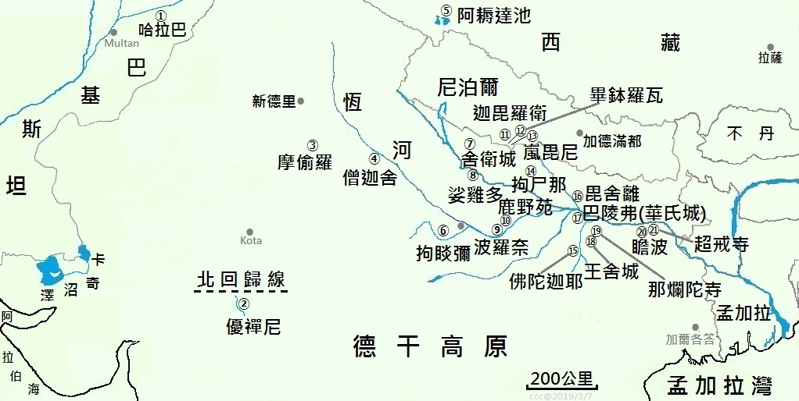

|
印度佛教思想史要略 莊春江 編著 1999/5/5 初稿, 2019/4/6更新 印度佛教史地理圖略  |
城邑名稱代碼： (依序由左而右)
①哈拉巴(Harappā≃30.61041,72.895224)：早於雅利安人的文明遺跡
②優禪尼(Ujjenī≡23.175514,75.783943)：阿槃提首都，上座分別說部中心
③摩偷羅(Madhurā≡27.5,77.68333)：佛陀遊化最西處，蘇羅婆國首都
④僧迦舍(Saṅkassa≃27.393717,79.446259)：佛於忉利天夏安居畢回人間處
⑤阿耨達池(Anotatta≃30.740088,81.495276)：古傳四大河的發源地
⑥拘睒彌(Kosambī≡25.36096,81.402655)：佛陀遊化處，支提國首都
⑦舍衛城(Sāvatthī≡27.517038,82.050346)：佛陀遊主要化處，憍薩羅國首都
⑧娑雞多(Sāketa≃26.8,82.2)：佛陀時代憍薩羅國之大城
⑨波羅奈(Bārāṇasī≡25.282,82.9563)：佛陀遊化處，迦尸國首都
⑩鹿野苑(Migadāya≡25.382821,83.023446)：佛陀初轉法輪處
⑪迦毘羅衛(Kapilavatthu≡27.576456,83.054972)：佛陀的祖國首都
⑫畢鉢羅瓦(Piprahwa≃27.443206,83.126260)：傳為釋迦家族供養佛陀舍利瓶出土處
⑬嵐毘尼(Lumbinī≡27.470039,83.275794)：佛陀出生地
⑭拘尸那(Kusinārā≃26.741,83.888)：佛陀入滅處，末羅國首都
⑮佛陀迦耶(Buddhagayā≡24.695923,84.991277)：佛陀證道成佛處
⑯毘舍離(Vesālī≡25.987143,85.127109)：離車國首都，第二次佛經結集處
⑰巴陵弗(Pāṭaliputta≡25.599886,85.184797)：摩竭陀國中心
⑱王舍城(Rājagaha≃25.022824,85.4173)：摩竭陀國首都，第一次佛經結集處
⑲那爛陀寺(Nālandā≡25.137688,85.443661)：後期佛教的重要寺院
⑳瞻波(Campā≃25.242625,86.935955)：佛陀遊化最東處，鴦伽國首都，東方最古城
㉑超戒寺(Vikrama śīla vihāra≡25.323779,87.284568)：後期佛教的重要寺院